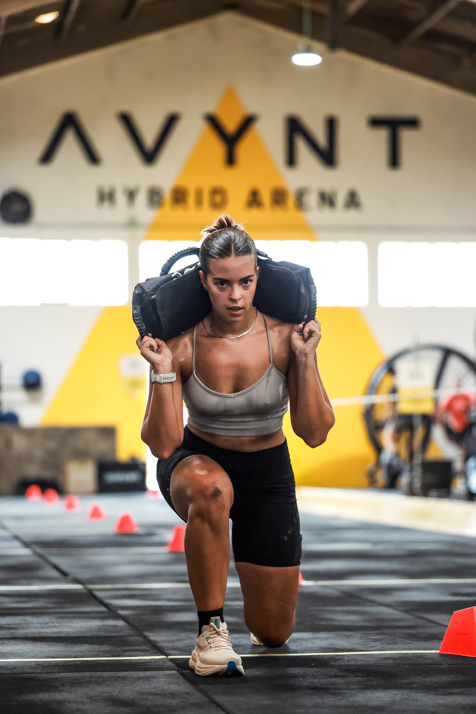
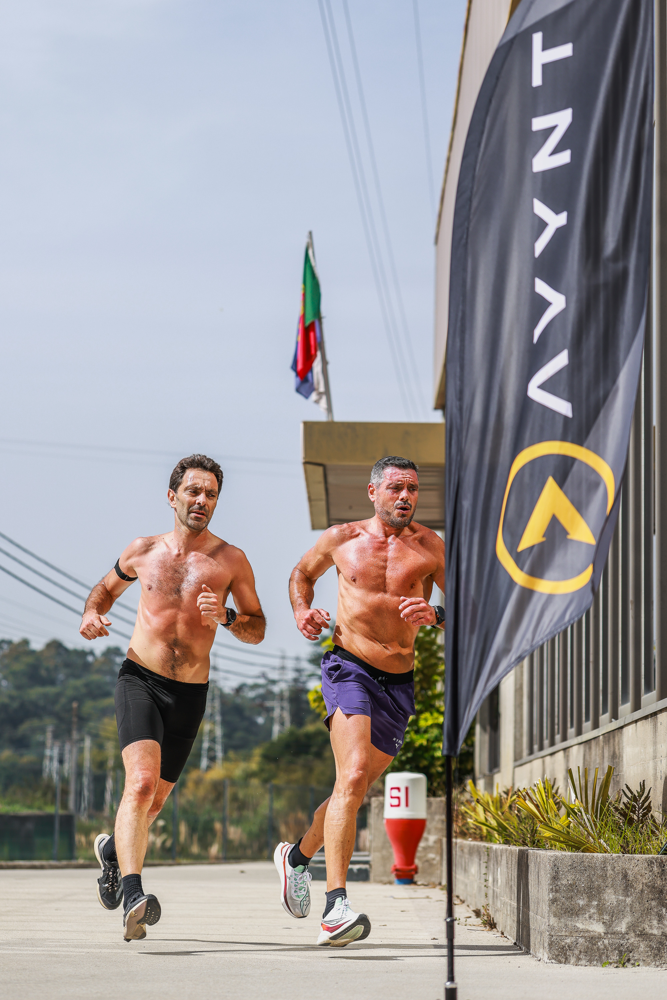

AVYNT Hybrid Arena staged its fourth simulation of 2026 in Vila Nova de Gaia on 26 September, bringing athletes together for a session built around running, strength and movement under fatigue.
The event was organised by AVYNT Hybrid Arena, whose official channels describe the venue as a space dedicated to hybrid training, performance and community. The photographs from the day place that identity at the centre of the story, moving from outdoor running to a loaded sandbag effort inside the arena.

Effort inside and outside the arena
Iranildo Seabra’s lead photograph records a group maintaining pace together, while Mauricio Diresto’s images follow the event from the arena floor to another outdoor running section. The sequence shows the mix of individual effort and shared rhythm that defines hybrid training.

Image Media’s coverage team for the event was Pedro Oliveira, Iranildo Seabra, Mauricio Diresto and Julia Diresto. The three photographs published here are credited according to the photographer names supplied with the original files.
Image Media coverage
Reporting: IM News Editorial Desk
Coverage photographers: Pedro Oliveira, Iranildo Seabra,
Mauricio Diresto and Julia Diresto / Image Media
Event date and location checked against the Image Media event
gallery; organiser and venue details checked against AVYNT’s
official channels.